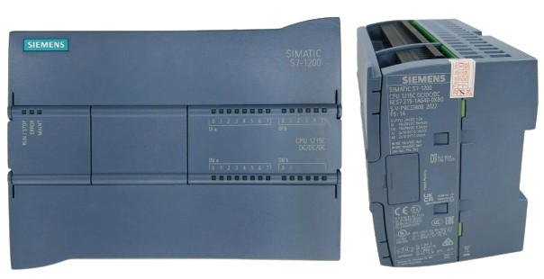

CLP
O que é um CLP?
O CLP (Controlador Lógico Programável) ou PLC (Programmable Logic Controller) é o verdadeiro "cérebro" da automação industrial. Trata-se de um computador projetado especificamente para operar em ambientes fabris severos (com poeira, calor e ruídos elétricos).
Sua função principal é gerenciar processos automatizados: ele lê as informações enviadas pelos sensores do processo, processa esses dados de acordo com uma lógica programada e envia ordens diretas para os atuadores elétricos da máquina.
Como Ele Funciona? (O Ciclo de Varredura)
Diferente do seu computador pessoal, o CLP funciona executando continuamente uma rotina chamada Ciclo de Varredura (Scan), que se repete em milissegundos:
✦Leitura das Entradas: Identifica o estado atual dos dispositivos de campo (ex: se um botão foi apertado ou se uma chave fim de curso detectou uma peça).
✦Execução da Lógica: Roda o programa armazenado na memória para decidir o que deve ser feito com base nas regras que o projetista programou.
✦Atualização das Saídas: Manda o comando elétrico para ligar ou desligar os equipamentos do circuito (ex: acionar um contator ou abrir uma válvula).
✦Autodiagnóstico: Verifica se há erros na memória, falhas de comunicação ou problemas nos módulos antes de recomeçar o ciclo.
Estrutura Principal de um CLP
Um sistema de CLP é dividido nas seguintes partes fundamentais:
✦CPU (Unidade Central de Processamento): É o processador que armazena a lógica e faz os cálculos e decisões.
✦Módulos de Entrada: Recebem os sinais dos sensores, chaves fim de curso, termopares e botoeiras (sinais digitais ou analógicos).
✦Módulos de Saída: Enviam a tensão necessária para acionar bobinas de contatores, relés, lâmpadas, inversores e solenoides.
✦Fonte de Alimentação: Transforma a tensão da rede no nível adequado para alimentar a CPU e os circuitos eletrônicos internos (normalmente 24Vdc).
✦Interface de Programação/Comunicação: Entradas que permitem conectar o CLP ao computador (para enviar o programa) ou a redes industriais e telas IHM (Interface Homem-Máquina).
Linguagens de Programação
Para programar um CLP, utiliza-se a norma internacional IEC 61131-3. A linguagem mais comum e famosa na elétrica é o Diagrama Ladder (Linguagem em Escada), que simula o desenho dos antigos diagramas elétricos de comandos com contatos e bobinas. Isso facilita muito o aprendizado para eletricistas e técnicos.
Principais Vantagens e Onde É Aplicado
Antes do CLP, os painéis elétricos precisavam de centenas de relés e temporizadores interligados por fios. O CLP revolucionou a indústria porque trouxe:
✦Economia de Espaço e Fiação: Substitui painéis gigantescos por um único equipamento compacto.
✦Flexibilidade: Para alterar a lógica de uma máquina, não é preciso refazer fiações — basta alterar poucas linhas do programa no computador.
✦Fácil Manutenção: LEDs nos módulos mostram na hora qual entrada ou saída está ativada, facilitando a identificação de defeitos no campo.
Aplicações: Linhas de montagem automotivas, envazadoras de bebidas, tratamento de água, sistemas de embalagem, elevadores e controle de malhas industriais.
Circuito feitos com o CLP
Foi feito um sistema de semáforo utilizando o CLP.